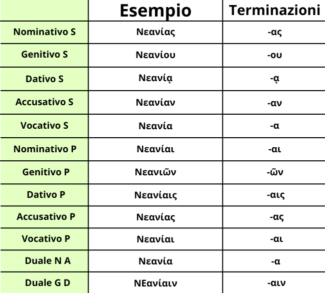

La declinazione per Alfa Puro maschile è una forma della Prima Declinazione.
Si dice che un sostantivo è in Alfa Puro quando la desinenza è preceduta o da ε o da ι o da ρ.
In ordine da Nominativo a Vocativo, da Singolare a Duale è: -ης, -ου, -ᾳ, -αν, -α, -α, -αι, -ῶν, -αις, -ας, -αι, -αιν.
Alla prima vista spiazza per due cose: il nominativo e il genitivo singolare. Al nominativo vi è il cosidetto Suffisso di Nomen agentis, ovvero una particolare desinenza che indica semplicemente chi compie un'azione. In Greco Antico il più usato è il -της e da esso si formano molte parole tutte maschili come αθλητής, ναύτης,...
Invece al genitivo singolare vi è un'altra anomalia, ovvero la desinenza -ου. Essa viene direttamente dal genitivo singolare della Seconda Declinazione e la si usa perché, al contrario della Prima Declinazione, nella Seconda Declinazione ci sono più nomi maschili invece che femminili, così si è deciso di attribuire questa particolare caratteristica ai nomi maschili della Prima Declinazione.
Infine, essendo comunque nomi della Prima Declinazione, hanno l'α da sola al nominativo e al vocativo singolare e l'ῶν al genitivo plurale. Quindi ricordati bene queste cose, poiché tornano molto utili nella traduzione di frasi o versioni.